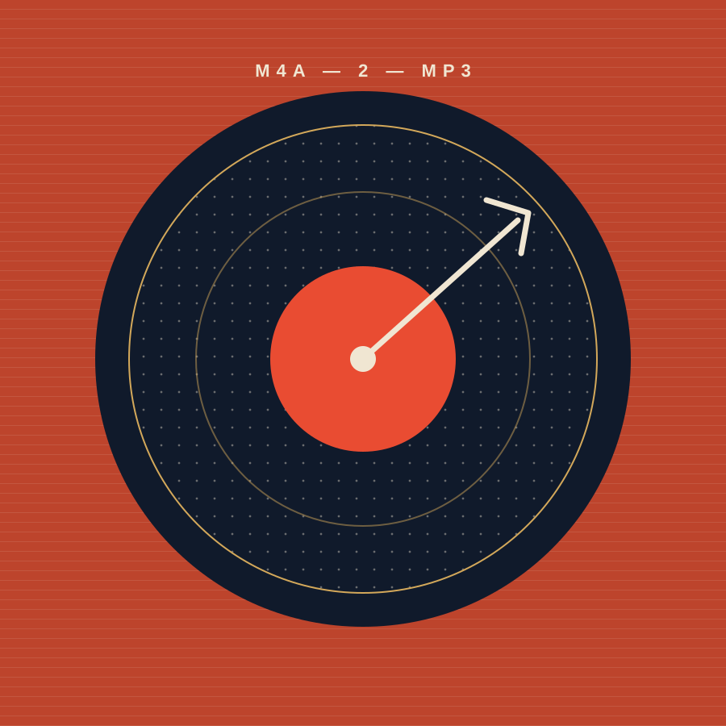

Les infos voyagent avec vous
Titres, artistes, albums et pochettes intégrées sont conservés lors de la conversion, selon les métadonnées disponibles dans le fichier source.
ÉDITION NUMÉRIQUE · CONVERSION AUDIO
Transformez vos fichiers M4A, WAV et AIFF en MP3 — en gardant les tags et les pochettes avec la musique.
Vous préférez installer vous-même ? Voir le code source

NOTES DE POCHETTE
Titres, artistes, albums et pochettes intégrées sont conservés lors de la conversion, selon les métadonnées disponibles dans le fichier source.
Ajoutez plusieurs fichiers ou un dossier entier. Les sous-dossiers sont parcourus et les résultats apparaissent au fur et à mesure.
Choisissez la qualité audio, le dossier de destination et l’organisation par artiste et album. La suppression des originaux reste facultative.
LE MODE D’EMPLOI
Déposez vos fichiers dans l’application, choisissez où les MP3 seront rangés, puis lancez la conversion. L’interface affiche l’avancement et le résultat de chaque fichier.
Python 3.9 ou plus récent et FFmpeg sont requis pour utiliser la version depuis les sources.
Voir les prérequis et les instructionsFFmpeg doit être installé et accessible dans le PATH.
Une petite presse à formats, pour votre grande collection.
Explorer le projet sur GitHub ↗